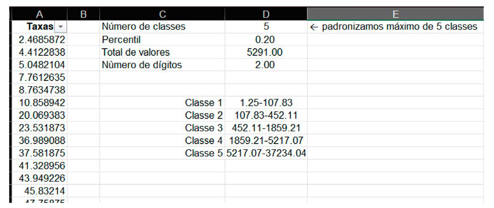
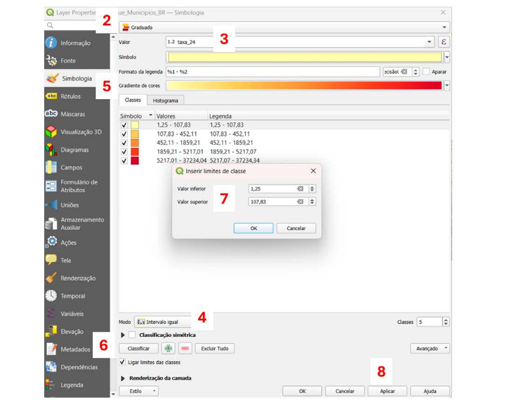
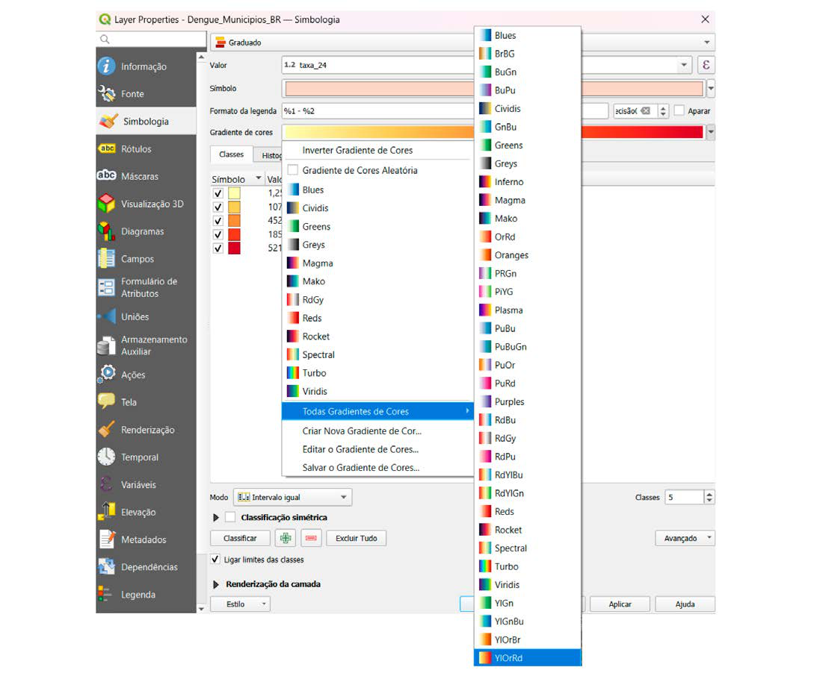
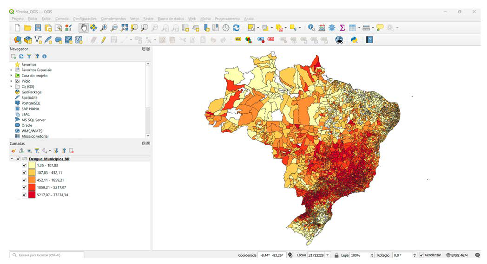
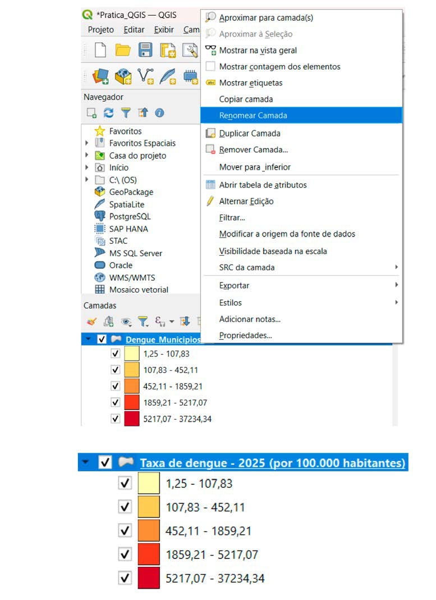

Módulo 3 | Aula 5
Prática SIG II– QGIS e Mapas Temáticos
Principais Métodos de Classificação
A escolha do método de classificação pode alterar drasticamente a aparência e a interpretação do mapa (SLOCUM et al., 2009).
| Método | Descrição | Vantagens / Desvantagens |
|---|---|---|
| Intervalos Iguais (Equal Interval) | A amplitude de cada classe é a mesma. (Ex: 0-10, 10-20, 20-30). | Vantagem: Fácil de entender. Desvantagem: Pode resultar em classes com muitas ou nenhuma observação se os dados forem assimétricos. |
| Quantil (Equal Count) | Cada classe contém o mesmo número de feições (áreas). | Vantagem: Garante que todas as cores sejam usadas no mapa. Desvantagem: Pode agrupar valores muito diferentes na mesma classe ou separar valores muito semelhantes em classes diferentes. Os intervalos podem ser confusos (ex: 0-7.3, 7.3-12.1). |
| Quebras Naturais (Jenks) | Algoritmo que busca minimizar a variância dentro de cada classe e maximizar a variância entre as classes. Ele identifica agrupamentos "naturais" nos dados. | Vantagem: Geralmente produz a representação mais fiel da distribuição dos dados. Desvantagem: Os intervalos são específicos para cada conjunto de dados, dificultando a comparação entre diferentes mapas. |
| Desvio Padrão (Standard Deviation) | As classes são definidas pelo desvio padrão em relação à média dos dados. | Vantagem: Útil para identificar outliers (valores extremos) e ver a relação de cada área com a média. Desvantagem: Menos intuitivo para um público não estatístico. |
| Percentil (Percentile) | As classes são definidas com base em percentis da distribuição dos dados (ex: 0–25%, 25–50%, 50–75%, 75–100%). Cada classe representa uma posição relativa do valor dentro do conjunto de dados. | Vantagem: Permite comparar facilmente a posição relativa de cada área dentro da distribuição. Desvantagem: Assim como o quantil, pode agrupar valores muito diferentes na mesma classe se houver grande variação nos dados. |
Após escolher o método e o número de classes desejado (geralmente entre 4 e 6), clique no botão Classificar. O QGIS irá gerar os intervalos e aplicar as cores ao mapa.
Aprenda a calcular o percentil no Excel:
- Vamos padronizar as classes da legenda calculando o Percentil, para isso disponibilizamos um Excel com cálculo:
- No Excel, abra o arquivo “divisão_via_percentil.xlsx” disponibilizado na plataforma. Ele calcula de forma automática a divisão das classes. Para isso, copie os valores das taxas do ano que se deseja fazer o mapa.
- Caso, queira fazer o mapa de mais de um ano para comparação, deve-se colocar as taxas uma abaixo da outra na coluna taxa da tabela para o cálculo considerar os dados de todos os anos.
- Elimine os valores vazios e zeros, em seguida reordene os valores na ordem crescente.
Para o ano de 2024, se desejarmos ter 5 classes a considerar teremos:

Retorne ao QGIS e configure a simbologia utilizando os intervalos calculados:
1. Abrir as propriedades da camada
- No painel Camadas, localize a camada que será utilizada no mapa.
- Clique com o botão direito do mouse sobre a camada.
- Selecione Propriedades.
2. Acessar a simbologia da camada
- Na janela Propriedades da Camada, clique na aba Simbologia.
- No tipo de simbologia, selecione Graduado.
Esse tipo de simbologia permite representar valores numéricos por classes com cores diferentes.
3. Escolher o campo de dados
- No campo Valor, selecione o atributo que será representado no mapa taxa_24.
- Esse campo será usado para calcular os intervalos das classes.
4. Definir o método de classificação
- No campo Modo, selecione Intervalo Igual.
- Defina o número de classes desejado de 5 classes.
Vamos preencher os intervalos com os valores das classes de percentil que calculamos no passo anterior.
5. Escolher a rampa de cores
- Clique em Gradiente de cores.
- Escolha uma rampa de cores adequada (por exemplo: amarelo g vermelho).
- Rampas sequenciais são recomendadas para representar intensidade de valores.
6. Gerar as classes
- Clique no botão Classificar.
- O QGIS irá gerar automaticamente os intervalos de valores para cada classe.
Cada classe representará um intervalo percentual da distribuição dos dados.
7. Ajustar os limites das classes
Caso seja necessário:
- Clique duas vezes sobre um intervalo.
- Ajuste o valor inferior ou valor superior.
- Clique em OK.
8. Aplicar a simbologia
- Clique em Aplicar.
- Depois clique em OK para fechar a janela.
O mapa será atualizado com as cores correspondentes às classes.

Para mais opções de cores clique na seta a direita do Gradiente de cores e clique em Todos os gradientes de cores.

O mapa aparecerá com as cores por município e a legenda na lateral com os valores.

9. Ajustar o nome da camada para a legenda
Para melhorar a apresentação da legenda:
- Clique com o botão direito na camada.
- Selecione Renomear Camada.
- Digite um título descritivo.
Exemplo:
Taxa de dengue – 2025 (por 100.000 habitantes)
